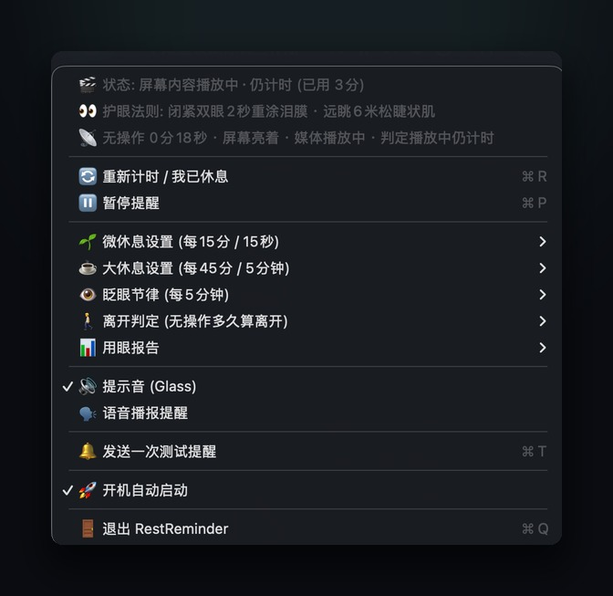
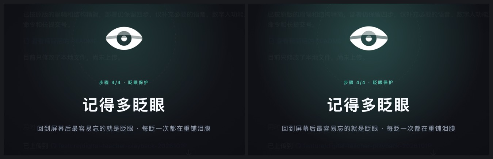
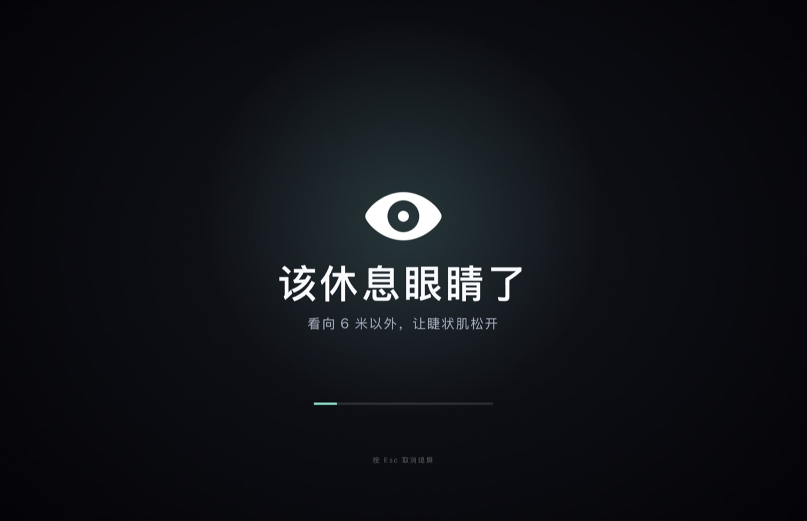
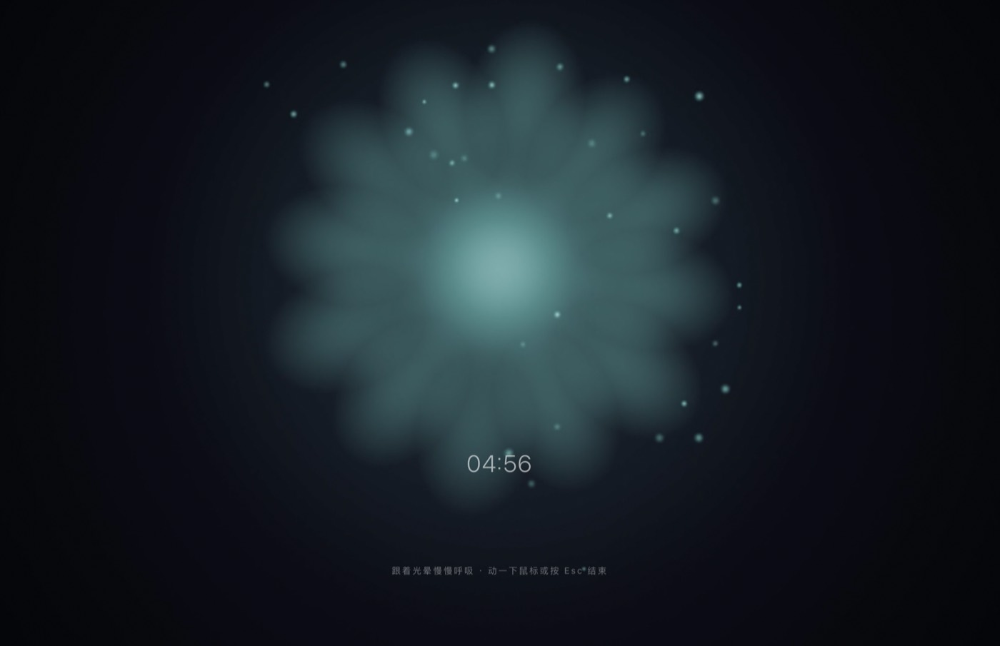

每 15 分钟弹一次窗，第三天就会变成噪音 —— 而人一旦下意识关掉提醒，这套机制就失效了。 RestReminder 换了个思路：把提醒放进余光里，把休息做成一段 15 秒的动作，把你的用眼情况变成一份每天能看的播报。
git clone https://github.com/Zephyr-777/RestReminder.git && cd RestReminder && ./install.sh

一个每 15 分钟出现一次的东西，本质上是一天 30 多次强制中断。真正有效的提醒，应该满足两个条件：它不抢注意力，并且它带着你把动作做完。
遮住屏幕中央、必须点掉、打断思路。前三次还有效，之后就是肌肉记忆式地关掉。
菜单栏那只眼睛在眨，图标随时间变淡；该休息时全屏只占 15 秒，四步跟着做，不用读、不用点。
一天里最频繁的是眨眼，最重的是起身。它们共用一个入口，但用三种强度提醒你。
全屏只占 15 秒，四步动作带节拍：闭眼泵压、缓慢眨眼、远眺 6 米、收尾提醒多眨眼。
菜单栏那只眼睛眨一下，两次之间图标缓缓变淡当进度条。不弹窗、不出声、不遮挡。
呼吸光晕的循环画面，或者干脆让显示器真熄屏。它是唯一一个会「占满屏幕」的提醒。
不是「告诉你该休息了」，而是把该做的动作走一遍。每步都配图标与文字节拍，你不需要记顺序。
上下睑缘完全贴合，机械泵压睑板腺分泌脂质。
脂质层铺开，完成一次完整的泪膜重涂。
这几秒不要看手机，让睫状肌从持续收缩中松开。
图标当场眨两下。从遮罩回到内容的那一刻最容易忘的就是眨眼，所以这句话放在最后一屏。

到点先播一段全屏呼吸动画，然后落进一段无缝循环的画面 —— 或者直接熄屏，让你必须起身。循环画面不是随手录的视频，是按呼吸节律逐帧渲染的。


现在就想歇一会儿，不必等到 45 分钟。菜单第一项点下去，立刻走一遍同样的流程 —— 提醒动画 → 循环休息画面 / 熄屏，并且按真实休息记账。
App 每秒记一笔「这一秒在干什么」，按天落盘。播报脚本把它渲染成一份单文件 HTML —— 无外链、可离线打开、也能从菜单里一键生成。
最频繁的那一档只动菜单栏的一个图标。看到「眼睛闭上」会诱发镜像性眨眼反射，比读一行「请眨眼」快得多。
15 秒里屏幕带着你走四步，每步有明确的时长和目的。你不需要记住顺序，也不需要判断自己做得对不对。
每天一份播报，不评分、不提醒你「昨天更差」。数据摆在那里，趋势自己会说话。
没有账号，没有遥测，没有崩溃上报，也不会发出任何一个网络请求。
没有 Xcode 工程、没有 SwiftPM、没有第三方库。build.sh 的核心就是一行 swiftc。
# 需要 macOS 13+ 与 Apple Silicon # 以及 Xcode Command Line Tools xcode-select --install git clone https://github.com/Zephyr-777/RestReminder.git cd RestReminder ./install.sh # 编译 → 装进 ~/Applications → 注册 → 启动
首发版本没有公证签名。如果被 Gatekeeper 拦下，去「系统设置 → 隐私与安全性」点「仍要打开」即可。
主循环是一秒一次的状态判定，统计只累加整数秒并按天写盘；日志到 512 KB 会自动轮转保留最近 2000 行。没有常驻的视频解码，循环画面是播放本地 MP4 或真熄屏。
四路信号一起看：屏幕是否熄灭、是否锁屏、是否有进程持有显示器睡眠断言（说明有视频或会议在播），以及键鼠无输入时长。看视频时手不动，但不会被误判成离开。
build.sh 里的编译目标写死为 arm64。Intel 机器把 -target 改成 x86_64-apple-macosx13.0 重新编译即可，源码本身没有依赖 Apple Silicon 的特性。
不能。跨设备的屏幕使用时间在 Apple 的私有 CloudKit 容器里，本机不落任何文件，也没有公开 API。想要手机数据，只能看你 iPhone 上的「屏幕使用时间」界面。
三条通道各自独立：微休息、眨眼节律、大休息都能单独开关和调周期。只想要眨眼提醒，把另外两档关掉即可。